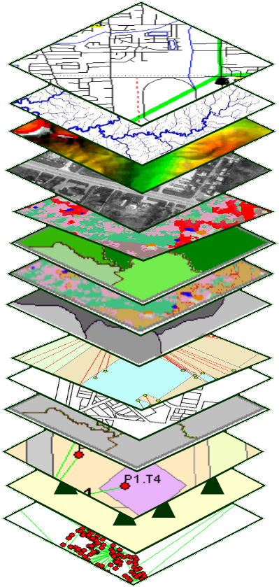
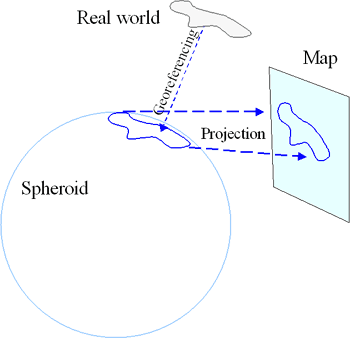
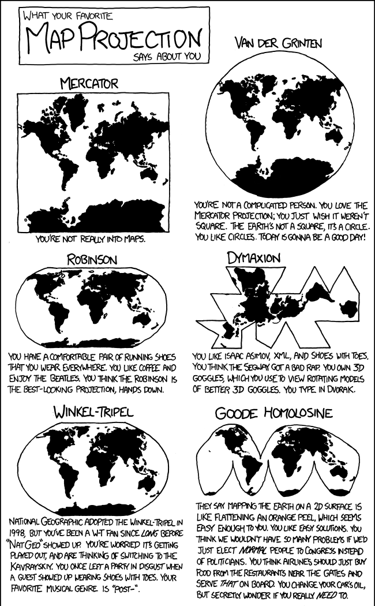
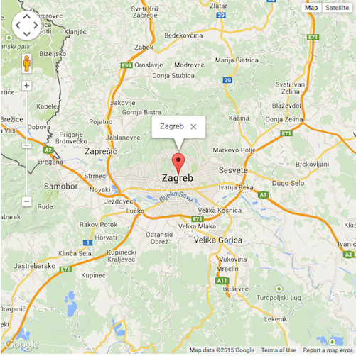
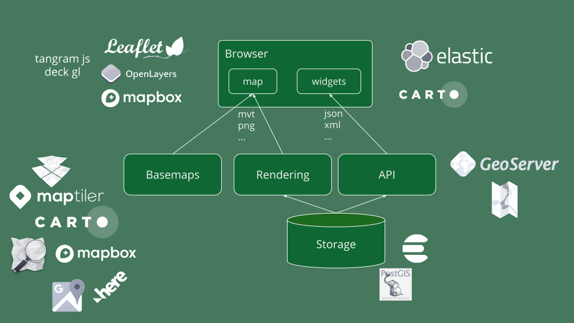
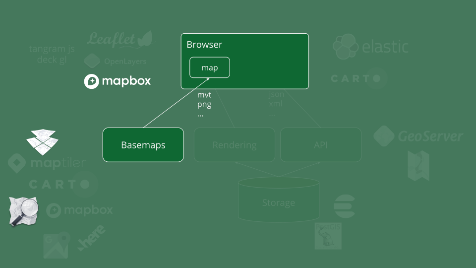

for in in ls; do echo $i; doneOpenMapTiles
t3chfest 2020
Jorge Sanz
Data Engineer at Elastic
Working at the Kibana Maps team
jorgesanz.net · @xurxosanz · gh:jsanz
üìë Agenda
Webmapping Intro
OpenMapTiles
Loading data from OSM
Data processing
Serving vector tiles
Styling
üåç Webmapping intro
Geographic Information System
 | “A geographic information system (GIS) is a system designed to capture, store, manipulate, analyze, manage, and present all types of spatial or geographical data.” |
Cartographic projectnios
 | “Projections are what we call the mathematical equations that do the trick of turning the world into some flat shape that fits on a printout or a computer screen.” Projections are a compromise between shape, angles, and distances |
 |
Web maps
 | “A tiled web map, or slippy map is displayed in a browser by seamlessly joining dozens of individually image files (vector or raster) over the internet.” A web map can be static or dynamic. |
WebMercator projection

A classic architecture

This workshop

OpenMapTiles
Loading data from OSM
Data processing
Serving vector tiles
Styling
Thanks!!
ü뮂Äçüíª Jorge Sanz
üìß jorge.sanz@elastic.co
üê§ @xurxosanz